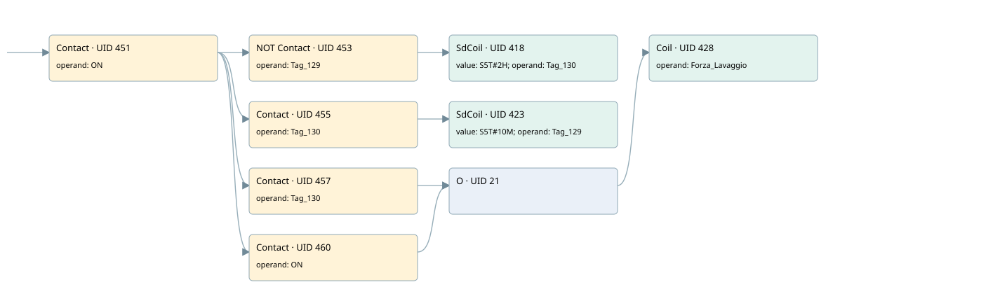

force wash minimum
filter · 검색 색인 순서 4 · 원본 내부 NID 추정 3
백업 PLF 원본의 2726937 바이트 위치에서 복원한 XML. 검색 문서 1885의 객체 키 161022002811000000000000와 연결했다. 이름 해석 10/10개. 남은 RefId는 상수 또는 미해석 참조다.
연결 구조 다시 그리기
원본 Part/PCon/Wire를 이용한 연결도다. TIA 화면의 래더 배치 또는 실행 결과를 재현한 그림은 아니다. 핀 연결은 아래 표와 원본 XML을 기준으로 읽는다. 노드 위에 마우스를 두면 피연산자 이름을 볼 수 있다.

접점·코일·블록과 피연산자
| Part UID | Gate | Negated 핀 | 연결 피연산자 |
|---|---|---|---|
| 451 | Contact | operand = ON | |
| 453 | Contact | operand | operand = Tag_129 |
| 418 | SdCoil | value = S5T#2H; operand = Tag_130 | |
| 455 | Contact | operand = Tag_130 | |
| 423 | SdCoil | value = S5T#10M; operand = Tag_129 | |
| 457 | Contact | operand = Tag_130 | |
| 460 | Contact | operand = ON | |
| 21 | O | ||
| 428 | Coil | operand = Forza_Lavaggio |
접점 경로를 펼친 조건식
Contact·O/A·비교기의 원본 연결을 읽기 쉽게 펼친 보조 해석이다. POWER는 전원 레일 시작을 뜻한다. 호출 블록·에지·타이머의 내부 동작과 다중 쓰기 순서는 이 표로 실행 검증하지 않았다. 미해석 핀과 RefId는 원문 연결표에서 확인한다.
| UID | 동작 | 대상 | 원본 접점 경로 | 내용 |
|---|---|---|---|---|
| 418 | SdCoil | Tag_130 | (ON AND NOT [Tag_129]) | 시간 동작 SdCoil; 타이머 의미 추가 확인 / 시간 인자 S5T#2H |
| 423 | SdCoil | Tag_129 | (ON AND Tag_130) | 시간 동작 SdCoil; 타이머 의미 추가 확인 / 시간 인자 S5T#10M |
| 428 | Coil | Forza_Lavaggio | ((ON AND Tag_130) OR ON) | 조건에 따른 Coil 기록 |
원본 배선 연결
| Wire UID | 동일 Wire 연결 끝점 |
|---|---|
| 459 | Powerrail {} ↔ Part 451.in |
| 438 | ORef 429 (ON) ↔ Part 451.operand |
| 452 | Part 451.out ↔ Part 453.in ↔ Part 455.in ↔ Part 457.in ↔ Part 460.in |
| 440 | ORef 431 (Tag_129) ↔ Part 453.operand |
| 454 | Part 453.out ↔ Part 418.in |
| 439 | ORef 430 (S5T#2H) ↔ Part 418.value |
| 442 | ORef 432 (Tag_130) ↔ Part 418.operand |
| 444 | ORef 434 (Tag_130) ↔ Part 455.operand |
| 456 | Part 455.out ↔ Part 423.in |
| 443 | ORef 433 (S5T#10M) ↔ Part 423.value |
| 446 | ORef 435 (Tag_129) ↔ Part 423.operand |
| 447 | ORef 436 (Tag_130) ↔ Part 457.operand |
| 458 | Part 457.out ↔ Part 21.in1 |
| 463 | ORef 461 (ON) ↔ Part 460.operand |
| 22 | Part 460.out ↔ Part 21.in2 |
| 23 | Part 21.out ↔ Part 428.in |
| 449 | ORef 437 (Forza_Lavaggio) ↔ Part 428.operand |
식별자 해석 근거 10개
| ORef UID | RefId | 이름 | IdentXmlPart 파일 | 해석 방법 |
|---|---|---|---|---|
| 429 | 52 | ON | 0594-IdentXmlPart.xml | UID/RID + search-text + NID agreement |
| 431 | 53 | Tag_129 | 0594-IdentXmlPart.xml | UID/RID + search-text + NID agreement |
| 432 | 55 | Tag_130 | 0594-IdentXmlPart.xml | UID/RID + search-text + NID agreement |
| 430 | 54 | S5T#2H | 0597-IdentXmlPart.xml | literal candidate: UID/RID/NID + nearby named declarations + search-text agreement |
| 434 | 55 | Tag_130 | 0594-IdentXmlPart.xml | UID/RID + search-text + NID agreement |
| 435 | 53 | Tag_129 | 0594-IdentXmlPart.xml | UID/RID + search-text + NID agreement |
| 433 | 56 | S5T#10M | 0597-IdentXmlPart.xml | literal candidate: UID/RID/NID + nearby named declarations + search-text agreement |
| 436 | 55 | Tag_130 | 0594-IdentXmlPart.xml | UID/RID + search-text + NID agreement |
| 461 | 52 | ON | 0594-IdentXmlPart.xml | UID/RID + search-text + NID agreement |
| 437 | 57 | Forza_Lavaggio | 0598-IdentXmlPart.xml | UID/RID + search-text + NID agreement |
검색 코드 보조 자료
참조 명칭을 찾기 위한 자료이며 실행 순서나 AND/OR 관계는 위 연결표로 확인한다.
"on" "tag_129" "tag_130" s5t#2h "tag_130" "tag_129" s5t#10m "tag_130" #forza_lavaggio "on"